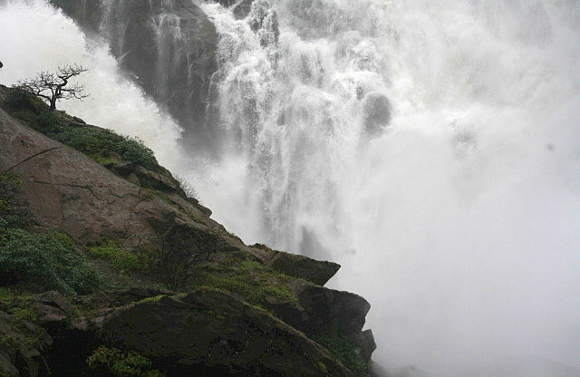
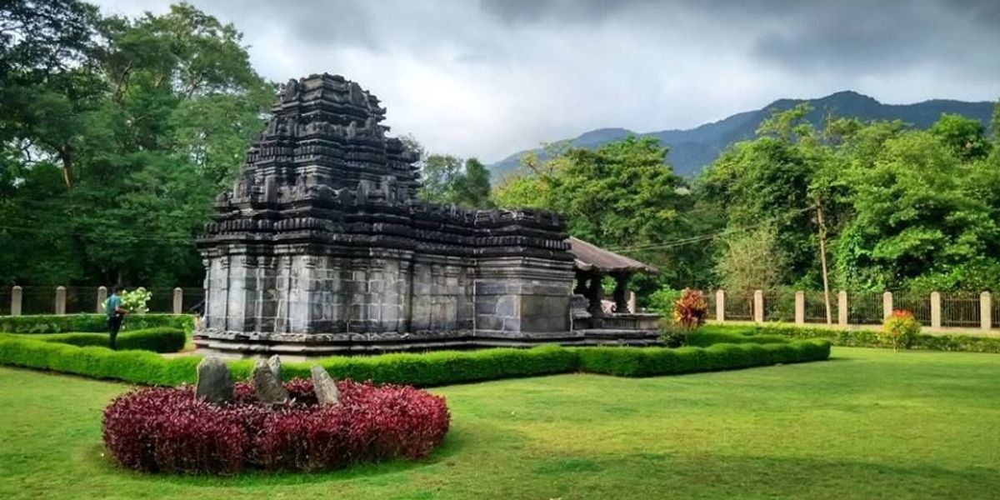

A guide to visit the majestic Dudhsagar waterfalls in Goa
In the last few years, the Dudhsagar waterfalls have become a popular weekend destination, especially for those travelling from cities like Mumbai, Pune and Bangalore (all thanks to a certain Bollywood movie). Most tourists to Goa these days make the Dudhsagar waterfalls a part of their itinerary for Goa. Because they are so huge, there are a number of ways to visit Dudhsagar waterfalls. They can also be visited from different location via different routes. All of these options can make planning a trip to the Dudhsagar waterfalls really confusing. If you've got just a weekend, you can't afford to lose a day in a messed up travel plan. We hear you! This guide to the Dudhsagar waterfalls will break down all your options for a visit to these waterfalls. This guide covers trekking to the Dudhsagar waterfalls, as well as doing the jeep safari, on a self-planned trip or a package group tour. This guide will help you plan any kind of visit to Dudhsagar waterfalls.
There are two different ways of visiting the Dudhsagar waterfalls:
- Trek to the Dudhsagar waterfalls-most popular in the monsoon months (June to September).
- Jeep safari to the Dudhsagar waterfalls-starts post-monsoon (typically operates from October end to May).
Where are the Dudhsagar waterfalls located?
The Dudhsagar waterfalls (Dudh: milk, Sagar: sea) are located on the Goa-Karnataka border. They are part of the Western Ghats - a mountain range in Southwest India.
It is a four-tiered waterfall with different ways to reach each level. The mountains from which the Dudhsagar waterfalls emerge are in Karnataka and the forest in which they fall is in Goa.
The base of these waterfalls is in the Bhagwan Mahavir Wildlife Sanctuary in the Mollem district of South Goa. It is a lush green sanctuary, characteristic to the forests of the Western Ghats.
How to reach the Dudhsagar waterfalls?
Because they straddle the two states of Goa and Karnataka, and because they are so big (they are among the highest waterfalls in India), there are multiple ways to reach the Dudhsagar waterfalls.
- You can take the train to reach the Dudhsagar waterfalls.
- You can reach near the Dudhsagar waterfalls by car or bus.
- You can also trek to the Dudhsagar waterfalls.
- Or, you can reach these waterfalls by jeep.
How to reach Dudhsagar waterfalls by train?
- You can take the train to the Dudhsagar waterfalls either from the Goa side or the Karnataka side.
-
If you are travelling from Mumbai/Pune/Goa, you will have to reach Kulem for
visiting the Dudhsagar waterfalls. The trains
to reach the Dudhsagar waterfalls while travelling from Mumbai/Pune/Goa are:
- The Amravati Express or Goa Express from Pune to Kulem.
- The Vasco-Kulem Daily Passenger runs every day from Madgaon/ Vasco in Goa to Kulem. If you are already in Goa, go to the Madgaon or Vasco railway stations and board this train.
How to reach Dudhsagar waterfalls by car?
- The Dudhsagar waterfalls are not directly accessible by road, which means you can not drive your car all the way to the Dudhsagar waterfalls.
- You will have to drive up to Kulem. From Kulem you can either trek to the Dudhsagar waterfalls or take a jeep safari via the Bhagwan Mahavir Wildlife Sanctuary.
- The parking lot in Kulem is a 2-minute walk from the Kulem Railway station.
- If you are driving down from Pune or Mumbai, you can take the national highway 48 to Belgaum. Then get off the highway and drive towards Mollem via Khanapur.
Trek to Dudhsagar waterfalls
- In Goa, your trek to the Dudhsagar waterfalls will start by climbing up the railway tracks from Kulem. You will climb up the Braganza ghat, crossing several tunnels and reach the Dudhsagar waterfalls. The trekking distance from Kulem to the Dudhsagar waterfalls is 11 km. It is a slightly uphill walk.
- If you start in Karnataka, you will trek over the railway tracks from Castle Rock. The trekking distance from Castle Rock to the Dudhsagar waterfalls is roughly 14 km.
- You can get off the Amravati Express at Sonalium which is an unscheduled stop. At Sonalium, you will have to climb down the ladder and jump off the train. There is no platform here. From Sonalium you have to walk roughly 3 km to reach Dudhsagar waterfalls.
Start of the trek to Dudhsagar waterfalls
It's fun walking through this section of the railway tracks in the middle of the forest through numerous tunnels. But you have to be mindful the whole while to the sound of approaching trains. By trekking over the railway tracks, you reach the middle tier of the Dudhsagar waterfalls.
The railway tracks trace a horseshoe (U) over the valley approaching the Dudhsagar waterfalls. The first glimpse of the waterfalls is, hence, from across the valley.
Our guide knew the exact point at which we would see the waterfalls. When the train got there, he started shouting “camera ready, viewpoint, viewpoint”.
We readied our cameras. The train slowly (and extremely steadily) approached the viewpoint - and we froze. We just couldn't take our eyes off the majestic Dudhsagar waterfalls. At that moment, we couldn't care about the camera, the photograph, the viewpoint or anything else.

Trekking to the pool at the base of Dudhsagar waterfalls
At this point, you can trek down from the tracks into the forest of the Bhagwan Mahavir Wildlife Sanctuary. Companies which offer trek to Dudhsagar waterfalls, often take this route. Through the forest, you reach the bottom tier of these waterfalls. You can return to Kulem via the forest route.
You can combine trek and travel by train to reach Dudhsagar waterfalls
- Dudhsagar Railway station is part of the Southwest Railway division of the Indian Railways. Passenger trains do not stop at Dudhsagar railway station. There is no platform here. You can get off the train only if the train gets a signal at Dudhsagar. You will then need to climb down the ladder and jump onto the ground. Words of caution: You need to be fit enough to jump off the train directly on the railway tracks. Travelling with babies or dependent seniors is a strict no-no.
- If you manage to get off at the Dudhsagar railway station, you will have to walk back for around 1 km to reach the waterfalls. Be warned: Boarding and deboarding at the Dudhsagar railway station are officially not allowed by the Railway Police.
- If you take the Amravati Express or the Vasco Kulem passenger in the morning, you can easily return to Madgaon by boarding the Amravati Express from Sonalium (doesn't operate on Sundays).
Rules about trekking to Dudhsagar waterfalls through the railway tracks
Before we go ahead, read this: Walking on the railway tracks is banned by the Railway Police. You are officially not allowed to access the Dudhsagar waterfalls through the railway tracks
Since the ban was put in place, we have received contradictory feedback from our readers who visited the Dudhsagar waterfalls individually. While some managed to easily walk over the railway tracks, others were stopped by the Railway Police and forced to turn back. We have also heard narrations of Railway Police standing near the Dudhsagar waterfalls in the monsoon and ensuring no one gets off the train.
What else is to see in the Bhagwan Mahavir Wildlife Sanctuary besides the Dudhsagar waterfalls?
- While there are several smaller waterfalls particularly just after the monsoon, another bigger waterfall is the Tambdi Surla.
- It is within the Mollem National Park of which the Bhagwan Mahavir Wildlife Sanctuary is a part. However, it is far from the Dudhsagar waterfalls and clubbing the two waterfalls in a day will not be possible.
- Another interesting feature inside the sanctuary and actually close to the Dudhsagar waterfalls is the Devil's Canyon. Even though it is en route, having a strict schedule means that your jeep driver will not halt at the Devil's Canyon.
- We recommend hiring a local guide and planning a separate visit than the jeep safari to the Dudhsagar waterfalls. The guide can take you to the Tambdi Surla waterfalls as well as the Devil's Canyon.

Tambdi Surla Waterfall

Tambdi Surla Mahadev Temple in Goa